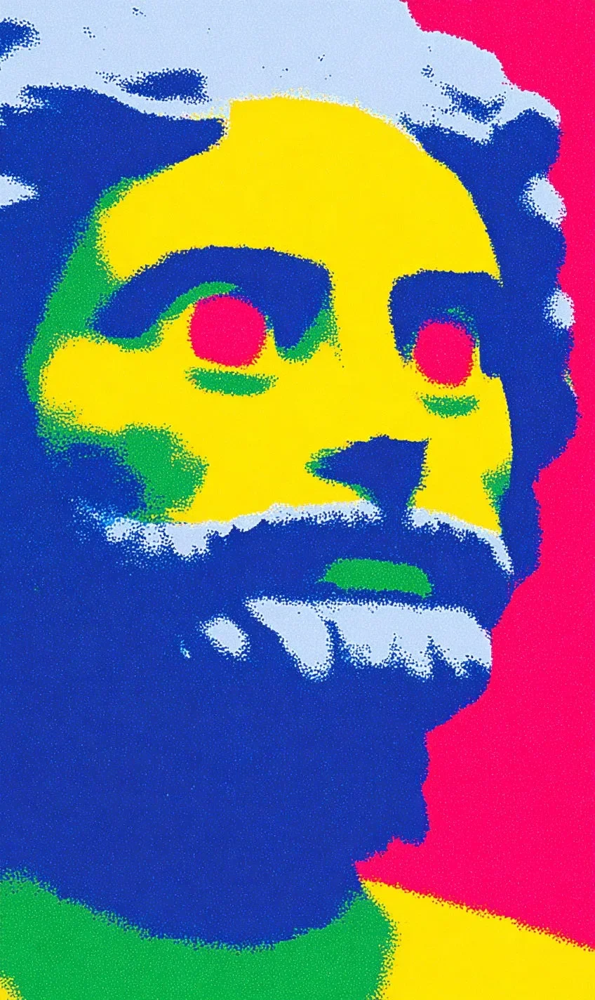

쿵쿵 울리는 음악 소리가 바닥을 강하게 흔들 때, 내가 천천히 눈을 뜨자 속눈썹에 오랫동안 쌓여 있던 하얀 대리석 가루가 힘없이 떨어집니다.
When the thumping sound of music shakes the floor strongly, and as I slowly open my eyes, the white marble dust that had piled up on my eyelashes for a long time falls helplessly.
화려한 조명 아래에서 땀을 흘리며 춤추는 사람들은 마치 흐릿한 물감처럼 보이지만, 아무도 박물관이 아닌 이곳에서 돌 조각상이 깨어났다는 사실을 알지 못합니다.
The people sweating and dancing under the fancy lights look just like blurry paint, but nobody knows the fact that a stone statue has awakened here, not in a museum.
차가운 내 뺨 위로 뜨거운 클럽의 열기가 닿아서 아주 이상한 기분이 들고, 번쩍이는 분홍색 레이저 불빛 때문에 천 년 만에 뜬 눈이 너무나 아픕니다.
The heat of the hot club touches my cold cheek so I feel a very strange mood, and because of the flashing pink laser lights, my eyes that opened for the first time in a thousand years hurt so much.
거대한 스피커에서 뿜어져 나오는 진동이 내 차가운 혈관을 타고 흐르자, 나는 굳어버린 입술을 억지로 올려 미소를 짓고 뻣뻣한 어깨를 리듬에 맡겨 춤을 추기 시작합니다.
As the vibration pumping out of the huge speakers flows through my cold veins, I force my stiffened lips up to smile and surrender my rigid shoulders to the rhythm to start dancing.